Buka Google Chrome, ketik Langkah pertama yang saya lakukan yaitu, searching di chrome oracle sql developer, kemudian pilih “SQL Developer Download”..
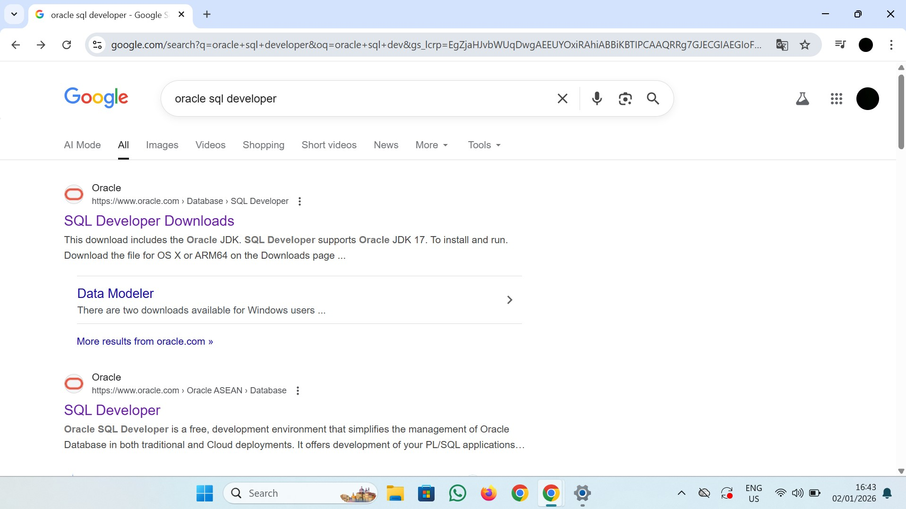
Langkah kedua yang saya lakukan setelah masuk ke situs sql developer download, saya pilih opsi pada lingkaran kotak yaitu “Windows 64-bit with JDK 17 included”
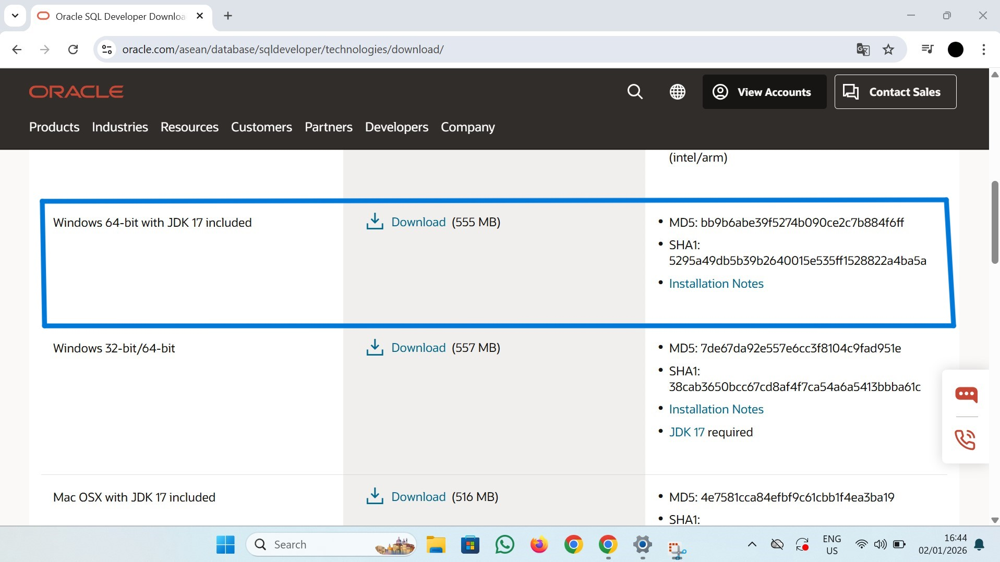
Setelah download file selesai, maka file berbentuk rar
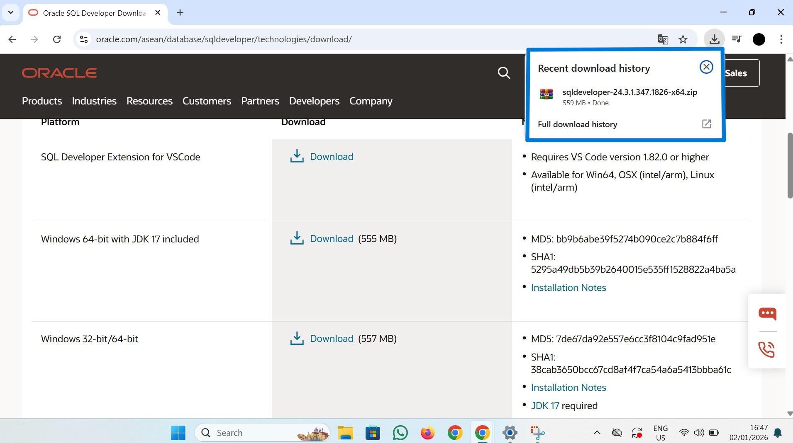
Kemudian file dalam bentuk rar tersebut saya extract dan tampil seperti tampilan dibawah ini.
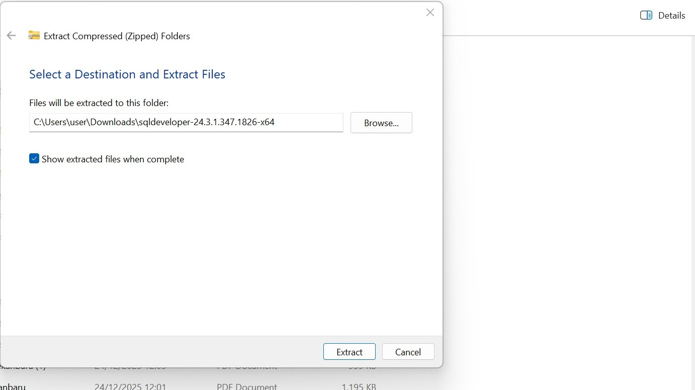
Setelah extract file selesai dilakukan maka selanjutnya cari “Sqldeveloper” klik kanan dan pilih “Run As Administrator”
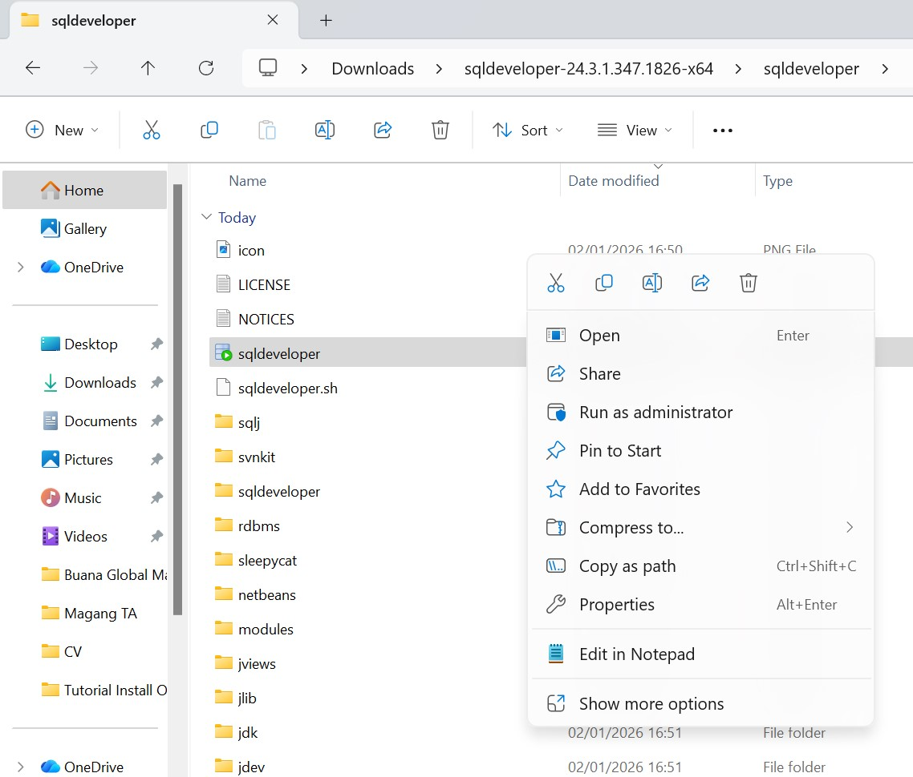
Dan tampilan berikut akan muncul , Oracle SQL Developer adalah alat (Integrated Development Environment/IDE) berbasis Java grafis yang juga didistribusikan secara gratis oleh Oracle. Ini adalah antarmuka yang digunakan pengguna untuk berinteraksi dengan database Oracle, termasuk XE. .
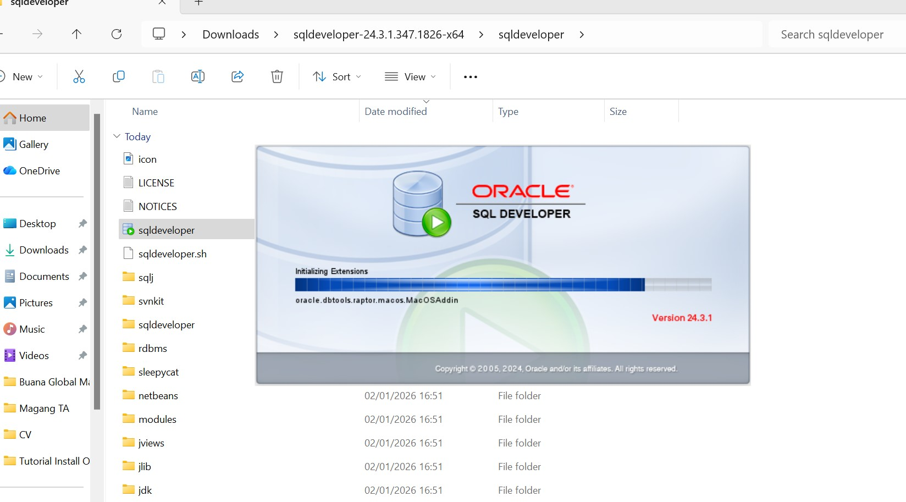
Langkah berikut juga jangan sampai tertinggal yaitu “install oracle database” dan situsnya sudah tercantum diatas, Oracle Database XE adalah edisi gratis dari basis data relasional Oracle yang kuat dan lengkap, dirancang untuk pengembang
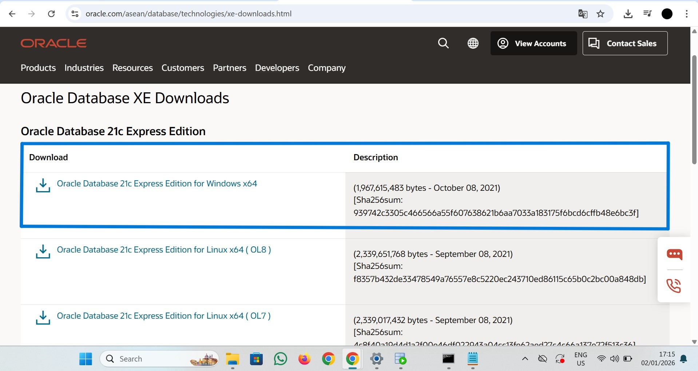
Setelah download selesai, maka akan muncul file “rar” kemudian extract dan cari “Setup” kemudian “run as administrator” dan “next” kemudian pilih “I accept the terms in the license agreement
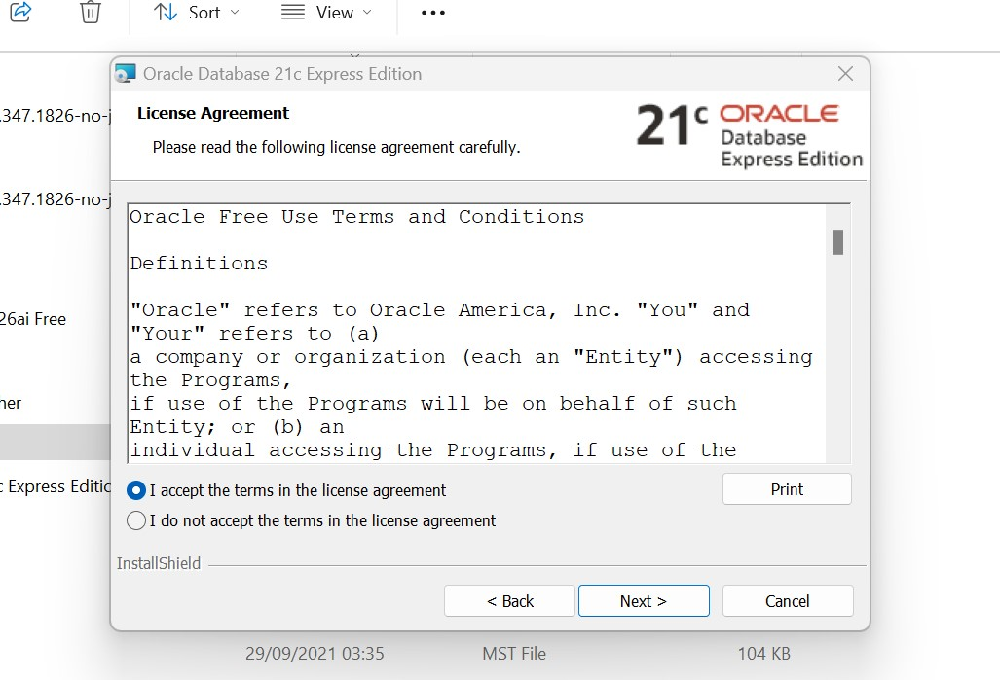
Setelah Langkah diatas selesai dilakukan, maka akan muncul tampilan seperti dibawah ini dan pilih “next”
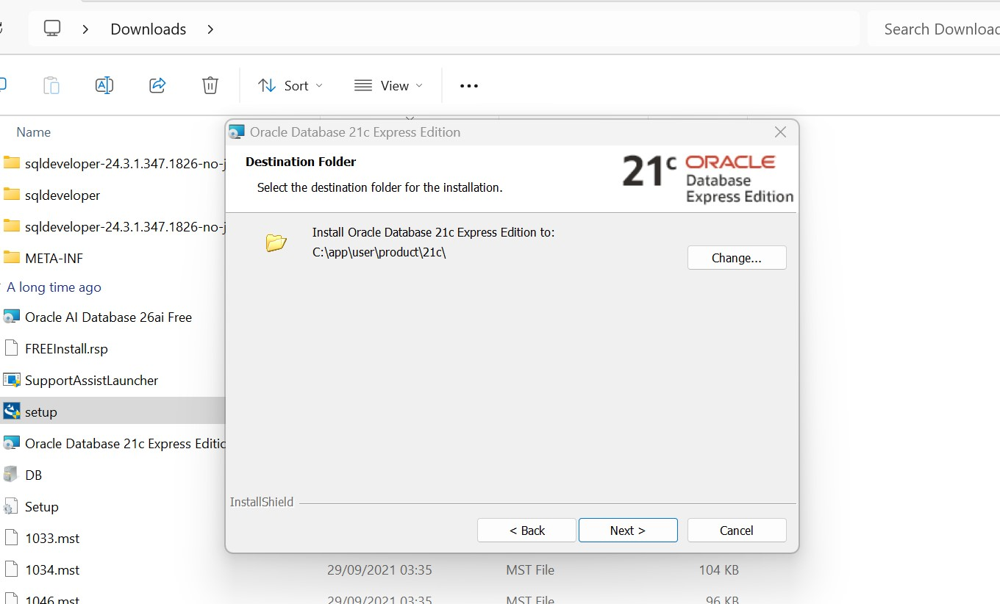
Setelah Langkah diatas selesai dilakukan, Langkah yang sangat penting juga yaitu memasukkan password database, salah satu fungsinya yaitu jika ingin membuat database/connections baru bisa menggunakan password tersebut.
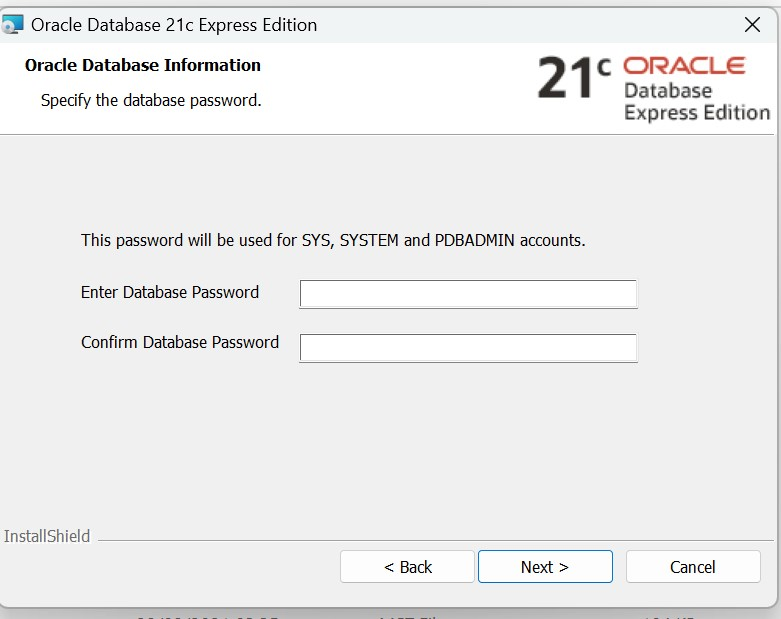
Pada tampilan dibawah ini suatu Langkah yang sangat penting juga yaituSetelah Langkah diatas selesai dilakukan, maka akan muncul tampilan seperti dibawah ini dan pilih “next”
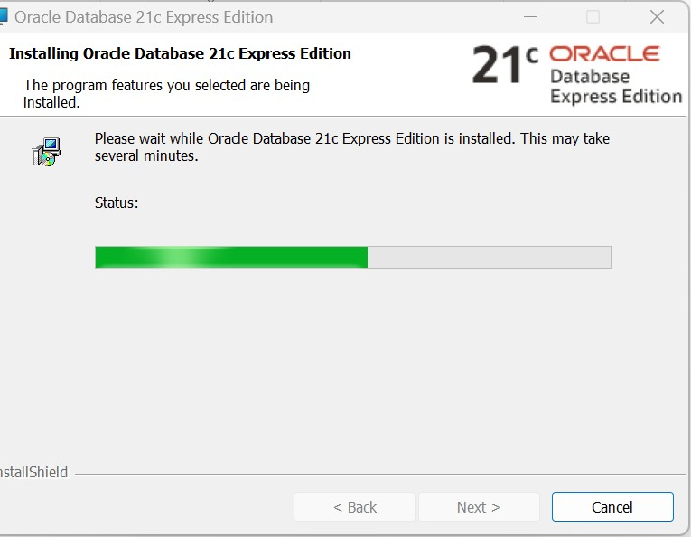
Langkah berikutnya klik “Next”.
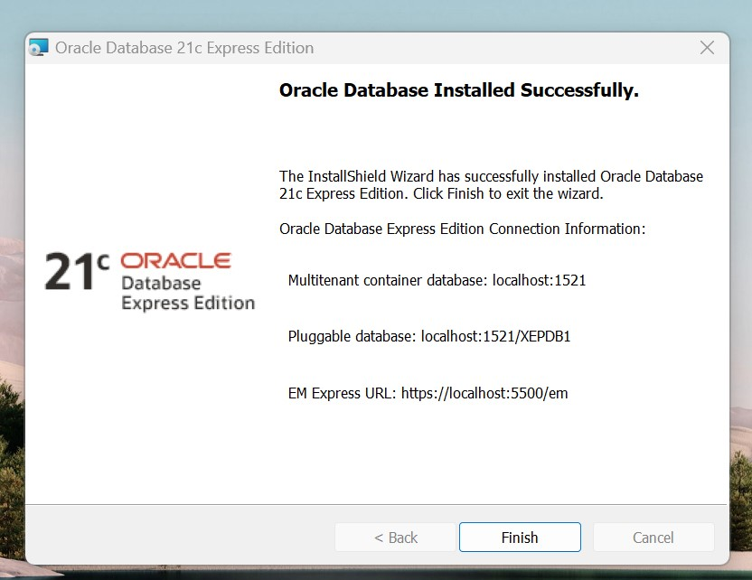
Langkah berikutnya klik “Finish”.
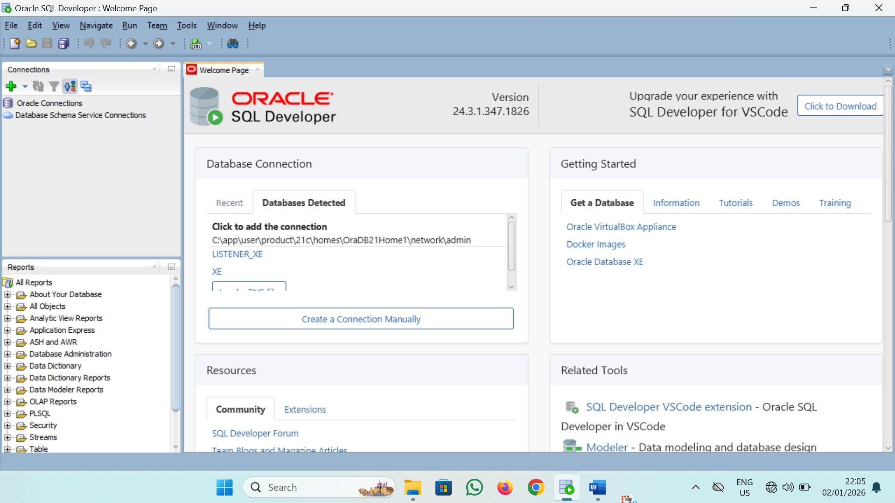
Setelah Klik “Finish” makan akan muncul seperti tampilan Langkah nomor 6..